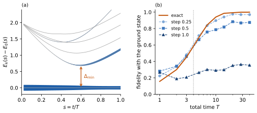
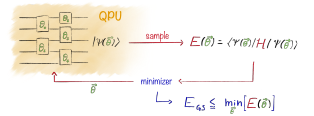
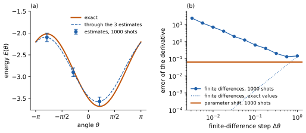
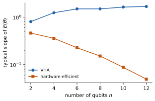

4 Preparing ground states
\[ \newcommand{\ket}[1]{\left|#1\right\rangle} \newcommand{\bra}[1]{\left\langle#1\right|} \newcommand{\gate}[1]{\mathrm{#1}} \newcommand{\Tr}{\mathrm{Tr}} \]
In the previous chapter, we estimated the energy of a state that a circuit prepares, and we built circuits that simulate how a state evolves in time. In this chapter, we ask how to prepare the lowest-energy state of a Hamiltonian, its ground state, on a quantum computer. We start from adiabatic evolution, which reaches the ground state by changing a Hamiltonian slowly, and turn its circuits into variational ones, whose angles a classical optimiser chooses to minimise the measured energy. This is the variational quantum eigensolver (VQE), one of the most widely studied ground-state methods for current devices. Most of the chapter is about what makes its optimisation hard, when every value of the energy is estimated from shots.
By the end of the chapter, you should be able to explain how adiabatic evolution prepares a ground state, and why its circuits are too deep for current devices; set up a VQE, with its circuit, its cost, its optimiser and a starting point; estimate gradients with the parameter-shift rule and count their cost in circuits; and recognise when an optimisation, or a claimed result, is limited by shot noise or by a barren plateau.
4.1 Ground states and the variational principle
Recall from Section 3.1 that the ground state \(\ket{E_0}\) of a Hamiltonian \(H\) is its eigenvector with the lowest eigenvalue \(E_0\). The difference \(\Delta = E_1 - E_0\) between the two lowest energies is the gap (also known as spectral gap or ground state gap).
A system in thermal equilibrium with an environment at a temperature \(T\) much lower than the gap, \(k_B T \ll \Delta\), is almost always found in its ground state. Many molecules and materials are in this regime. The electronic gap of a typical molecule is a few eV, and 1 eV corresponds to \(k_B T\) at about 11600 K, so at room temperature (\(k_B T \approx 0.025\) eV) the electrons sit in their ground state. The gap of a superconductor is much smaller: in aluminium, the metal used in superconducting qubits, it is about 0.2 meV, which corresponds to about 2 K: this is one reason why these devices are cooled to about 10 mK. This is the same argument we used for the qubits themselves in Section 1.2.3: a transmon at 5 GHz has a gap \(hf\) that corresponds to about 0.25 K, so at 10 mK it relaxes into its ground state \(\ket{0}\).
In general, finding the ground-state energy of a local Hamiltonian is believed to be hard even for a quantum computer: the problem is QMA-complete, the quantum analogue of NP-complete, already for 2-local Hamiltonians (Kempe et al. 2006). This is a worst-case statement, and many Hamiltonians that describe real materials and molecules are believed to be easier. Most of the methods of this chapter are heuristics: they come with no general guarantee of performance. We judge them by testing them on problems whose answer we know, examining experimentally how they perform with changing system size, and extrapolating to larger systems.
A key tool we use is the variational principle. Write a state \(\ket{\psi}\) in the eigenbasis of \(H\), \(\ket{\psi} = \sum_k \alpha_k\ket{E_k}\), with \(p_k = |\alpha_k|^2\) summing to 1. Then \[ \bra{\psi}H\ket{\psi} = \sum_k p_k E_k \;\ge\; E_0 , \tag{4.1}\] since a weighted average of the energies is at least the smallest of them, with equality only if all the weight is on the ground state. No state has a lower energy than the ground state, so to find the ground state we can look for the state of lowest energy, and a lower energy brings us closer to it. How much closer depends on the gap (Exercise 4.1).
In other words, the ground-state energy is the minimum of the energy over all states, \[ E_0 = \min_{\ket{\psi}} \bra{\psi}H\ket{\psi} , \tag{4.2}\] and the ground state is the state where the minimum is reached.
Exercise 4.1 (How close is a low energy to the ground state?) A state \(\ket{\psi}\) has the energy \(E = \bra{\psi}H\ket{\psi}\) and the fidelity \(F = |\langle E_0|\psi\rangle|^2\) with the ground state, which we assume to be unique, with gap \(\Delta\) (or, if the state can only be a combination of states with a given symmetry, the gap among those states).
Show that \(E - E_0 \ge (1 - F)\,\Delta\), so that the fidelity is at least \(1 - (E - E_0)/\Delta\).
Hint
Start from Equation 4.1 and use \(E_k - E_0 \ge \Delta\) for \(k \ge 1\).
A state has an energy \(0.05\) above \(E_0\), for a Hamiltonian with \(\Delta = 0.5\). What can you say about its fidelity with the ground state? What if the gap is \(0.01\)?
4.2 Adiabatic state preparation
Suppose we know a Hamiltonian \(H_0\) whose ground state is easy to prepare. We then change the Hamiltonian slowly from \(H_0\) to the target \(H\), along \[ H(s) = (1 - s)\,H_0 + s\,H, \qquad s = t/T , \tag{4.3}\] over a total time \(T\), with \(s\) growing from 0 to 1.
Example. For the TFIM, a natural choice is the field term alone, \(H_0 = -h\sum_i X_i\), with the ground state \(\ket{+\cdots+}\), a Hadamard gate on every qubit. The path then keeps the field fixed and switches on the bonds, \(H(s) = -sJ\sum_i Z_iZ_{i+1} - h\sum_i X_i\).
The adiabatic theorem, first proved by Born and Fock (1928), says that if \(H(s)\) changes slowly enough and its gap stays open (nonzero), a state that starts in the ground state of \(H(0)\) stays in the ground state of \(H(s)\) at every moment, and so it ends in the ground state of \(H\). Using this to solve problems is called adiabatic state preparation, or the adiabatic algorithm (Farhi et al. 2000). “Slowly enough” depends on the smallest gap \(\Delta_{\min}\) along the path. A common rule of thumb is \[ T \gg \frac{\|dH/ds\|}{\Delta_{\min}^2} , \] where the numerator measures how much the Hamiltonian changes along the whole path; the precise conditions are in Albash and Lidar (2018). Intuitively, the state cannot follow a change that is fast compared with the rate \(\Delta\) at which the relative phase between the ground state and the first excited state turns (Section 3.1), and the closer the two levels, the more a given change of \(H\) mixes them: each effect gives one factor of \(\Delta\).
Example. Figure 4.1 (a) shows this for a TFIM chain of \(n = 8\) qubits with \(J = 1\) and \(h = 0.5\), which we use as the example for the rest of the chapter. Every term of the TFIM commutes with the parity \(X_1X_2\cdots X_n\), which flips all qubits, and so does every gate of the TFIM circuits in this chapter: starting from \(\ket{+\cdots+}\), of parity \(+1\), the evolution only reaches states of parity \(+1\), and the figure shows only those. The gap is smallest near \(s = 0.6\), where the bond terms start to dominate the field, with \(\Delta_{\min} \approx 0.69\). Along the path, \(dH/ds = -J\sum_i Z_iZ_{i+1}\) has the norm \(J(n-1) = 7\), so the rule of thumb asks for \(T \gg 7/0.69^2 \approx 15\). An evolution with \(T = 4\) is too fast for this gap: around the minimum, part of the state leaks into the first excited state, and the final fidelity with the ground state is only 0.58. Panel (b) shows how the fidelity grows with \(T\): it exceeds 0.99 at \(T = 20\).
On a long chain, the smallest gap of this path shrinks in proportion to \(1/n\), so the time needed grows only polynomially. For hard problems, the smallest gap can shrink exponentially with \(n\), and so the time grows exponentially, as expected from the worst-case hardness of the previous section.

4.2.1 Adiabatic circuits
On a digital quantum computer, we apply the evolution under \(H(s)\) with a Trotter circuit (Section 3.5). Each step of length \(\delta\) applies \(e^{-iH(s)\delta}\), approximated by the circuit of Figure 3.4, with \(s\) taken at the middle of the step: \(R_{ZZ}(-2sJ\delta)\) on every bond and \(R_X(-2h\delta)\) on every qubit. Only the angles of the bond gates change from step to step, following the schedule \(s = t/T\).
Example. The blue curves of Figure 4.1 (b) show what the Trotter error does: with steps of 0.25, the fidelity levels off at 0.97, with steps of 0.5 at 0.87, and with steps of 1 at 0.35, however long the evolution. The Floquet picture of Section 3.5.4 explains why: each step evolves the state exactly, but under the Floquet Hamiltonian \(H_F\) instead of \(H(s)\), so a slow circuit prepares the ground state of \(H_F\), not of \(H\), and the fidelity of the two states is where the curves level off.
The circuits are long. Reaching a fidelity of 0.97 takes \(T \approx 20\) with steps of 0.25, which is 80 steps. Each step has 7 bond gates, or 14 CZs (Section 3.5.3), so the circuit has 1,120 CZs. With an error of 0.5% per CZ, Equation 2.12 gives a probability of \(e^{-5.6} \approx 0.004\) that the circuit runs without an error: the noise destroys the state long before the end.
4.3 Variational circuits
The adiabatic circuit has a fixed structure: layers of \(R_{ZZ}\) on all bonds and \(R_X\) on all qubits, with angles that the schedule prescribes. With only a few layers, the schedule gives a poor state: either the steps are long, with a large Trotter error, or the total time is short, too fast for the gap. But the variational principle tells us how to judge any choice of angles: the lower the energy, the better. So we keep the structure, free the angles, and let an optimiser choose them.
4.3.1 The variational Hamiltonian ansatz
For the TFIM, the circuit with \(p\) layers starts from \(\ket{+\cdots+}\) and applies, in layer \(k\), \(R_{ZZ}(\gamma_k)\) on every bond and \(R_X(\beta_k)\) on every qubit, as in Figure 3.4 but with free angles. Its \(2p\) angles \(\theta = (\gamma_1, \beta_1, \dots, \gamma_p, \beta_p)\) prepare the state \(\ket{\psi(\theta)}\), with energy \[ E(\theta) = \bra{\psi(\theta)}H\ket{\psi(\theta)} , \] and we look for the angles that minimise it. A family of circuits like this one, fixed up to its parameters, is called an ansatz (German for “approach”, plural ansätze), and this one, built from the terms of \(H\), is the variational Hamiltonian ansatz (VHA) (Wecker et al. 2015). Each layer is one Trotter step of \(H(s)\) with free angles: the schedule of Section 4.2.1 is the point \(\gamma_k = -2s_kJ\delta\), \(\beta_k = -2h\delta\) of the ansatz, with \(s_k\) the middle of step \(k\), and the obvious starting point for the optimiser.
Example. For our chain of 8 qubits, the schedule with 7 layers, at the total time \(T \approx 4\) that minimises its energy, reaches a fidelity of 0.55 with the ground state. Starting from these angles and minimising the energy gives a fidelity of 0.991 with the same 7 layers, and an energy 0.018 above \(E_0\). The circuit has 98 CZs instead of 1,120. These numbers come from an exact simulation, which shows what the ansatz can reach; with shots, the optimiser only sees estimates of the energy, as discussed in Section 4.4.
How many layers are needed? A circuit of few layers of local gates cannot correlate distant qubits, because of its light cone (Section 3.6), so a ground state with correlations across the chain needs a number of layers that grows with \(n\). For the TFIM on a ring of an even number \(n\) of qubits, Ho and Hsieh (2019) showed numerically that \(n/2\) layers prepare the ground state exactly at \(h = J\), and conjectured it, with numerical support, for every \(h\).
Example. On our open chain, 4 layers are not enough (fidelity 0.75), and 7 give 0.99.
4.3.2 The variational quantum eigensolver
The same idea works with any ansatz and any Hamiltonian.
Definition 4.1 (Variational quantum eigensolver) The variational quantum eigensolver (VQE) minimises the energy \(E(\theta) = \bra{\psi(\theta)}H\ket{\psi(\theta)}\) of the state prepared by an ansatz with parameters \(\theta\). It repeats a loop:
- the quantum computer prepares \(\ket{\psi(\theta)}\) and estimates \(E(\theta)\) from shots;
- a classical optimiser uses this estimate, and the earlier ones, to choose new parameters \(\theta\).
The loop stops when the estimates stop improving, and returns the best parameters found and an estimate of their energy.
VQE was proposed by Peruzzo et al. (2014), and it belongs to the wider class of variational quantum algorithms (Cerezo et al. 2021). Figure 4.2 shows the loop. Step 1 is the measurement of Section 3.4: a few measurement settings (two for the TFIM, \(Z\) and \(X\)), and a shot budget that sets the standard error of each estimate. The quantum computer only ever runs short circuits, of a fixed depth, which is what makes the method suitable for noisy devices. It also absorbs some errors: if a gate over-rotates by a fixed amount (Section 2.4), the optimiser simply finds different angles. By Equation 4.1, \(E(\theta) \ge E_0\) for every \(\theta\), so the exact energy of any VQE state is an upper bound on \(E_0\).

This bound holds for the exact energy, not for its estimate. The optimiser never sees \(E(\theta)\), only estimates with a standard error \(\varepsilon\), and noise adds a bias (Section 2.7), which usually raises the energy, since depolarising noise shrinks expectation values towards zero. Three habits follow.
- Test the whole procedure on small instances whose ground state is known from exact diagonalisation (computing the lowest eigenvector of \(H\) classically), as in the figures of this chapter.
- After the optimisation, estimate the energy of the final parameters again with fresh shots. The optimiser kept the parameters whose estimates were lowest, and among many estimates the lowest are often those that fluctuated downwards, so the last estimate is biased low.
- Read an estimate below \(E_0\) as a fluctuation, or as a sign of a systematic error, such as readout errors or an error-mitigation step that over-corrects, not as a better state.
Exercise 4.2 (An energy below the ground state) For a chain of 20 qubits, a paper reports a VQE energy \(0.03\) below \(E_0\), with a standard error of \(0.02\); the exact \(E_0\) is known from a classical method. What could explain the result? What would you check first? Why does the bound of Exercise 4.1 not apply here?
4.3.3 Choosing an ansatz
The ansatz decides what the VQE can reach. It must contain a good approximation of the ground state, be shallow enough for the noise of the device, and have an energy landscape that the optimiser can navigate. There are two broad approaches, with many variations; we only introduce them here, and Tilly et al. (2022) review them.
- Physics-motivated ansätze are built from the problem. The VHA uses the terms of \(H\). For molecules, the unitary coupled-cluster ansatz, from quantum chemistry and proposed for VQE by Peruzzo et al. (2014), builds the circuit from the excitations of electrons between orbitals. Other ansätze keep a symmetry of \(H\), such as the number of flipped qubits in the Heisenberg model (Section 3.3), so that the search stays among states with the right symmetry. Adaptive ansätze grow the circuit one gate at a time, choosing the gate along which the energy is steepest (Grimsley et al. 2019). These ansätze usually have few parameters, but their gates follow the interactions of \(H\), which may not match the coupling graph of the device and then need SWAPs.
- Hardware-efficient ansätze are built from the device (Kandala et al. 2017). Each layer applies native single-qubit rotations, each with its own angle, and native two-qubit gates on the coupled pairs of the device. They are as shallow as a circuit can be, and need no SWAPs. But they carry no information about \(H\), they have many parameters (\(2n\) per layer with two rotations per qubit), and they break most symmetries. They are also the most exposed to the barren plateaus of Section 4.5.
Example. On 8 qubits, 7 layers of the VHA have 14 parameters and 98 CZs, while 7 hardware-efficient layers have 112 parameters and 49 CZs.
4.3.4 Quantum annealing and QAOA
The adiabatic idea and the layered circuits also apply to classical optimisation problems. A standard example is MaxCut: given a graph, split its vertices into two groups so that as many edges as possible join vertices in different groups. With one qubit per vertex, whose bit marks its group, \(Z_iZ_j = -1\) exactly when the edge \((i,j)\) is cut, so maximising the number of cut edges means minimising \[ H_C = \sum_{(i,j)\in\text{edges}} Z_iZ_j , \] the TFIM with \(h = 0\) on the graph, with \(J = -1\) (outside the range of Definition 3.3: neighbours prefer to differ): a classical Ising model. \(H_C\) is diagonal, so its eigenstates are bitstrings. For a variational method, this means that a single measurement setting, the \(Z\) setting, measures all its terms, and that every shot gives a candidate solution, whose cut we can check classically: we keep the best bitstring seen, not only the average energy.
Quantum annealing runs the adiabatic path of Equation 4.3 to such a classical Ising model on an analog device, which applies \(H(s)\) directly instead of a Trotter circuit (Kadowaki and Nishimori 1998). Annealers with thousands of superconducting qubits exist; they work at a finite temperature and faster than the adiabatic theorem requires, so they are heuristics, and whether they outperform classical methods is debated (Albash and Lidar 2018). The QAOA, or quantum approximate optimisation algorithm (Farhi et al. 2014), is the corresponding variational circuit: from \(\ket{+\cdots+}\), each layer applies \(e^{-i\gamma_kH_C}\) and then \(e^{-i\beta_k\sum_iX_i}\), with \(2p\) angles optimised as in a VQE.1
4.4 Optimising with shots
The optimiser sees each energy only through an estimate \(\bar E(\theta)\), with a standard error \(\varepsilon\) that is at most \(\|c\|_1/\sqrt{N}\) for \(N\) shots (Equation 3.6). Comparing two parameter values is meaningful only if their energies differ by more than about \(\varepsilon\). Far from the minimum, energy differences are large and the optimiser makes progress. Near the minimum, the energy is flat, the differences shrink, and eventually the shot noise hides them: the shots, not the optimiser, set the final accuracy. Optimisers for VQE are chosen, and tuned, for this situation. The total number of shots this costs is the subject of Tutorial 4.
There are two families of optimisers. Gradient-based optimisers estimate the gradient \(\nabla E(\theta)\), the vector of partial derivatives, and step downhill, \(\theta \to \theta - \eta\,\nabla E(\theta)\), with a step size \(\eta\) (gradient descent), or with one of its refinements from machine learning. How to estimate the gradient from shots is the subject of Section 4.4.1. Gradient-free optimisers use only energy values. Two are widely used for VQE.
- COBYLA, constrained optimisation by linear approximation (Powell 1994), fits a linear model of the energy through recent evaluations, and moves to the lowest point of the model within a region that it shrinks as the optimisation converges. With exact energies, it converges quickly for a few tens of parameters. With shot noise, the model fits the noise once its points are close together, so it tends to stop early.
- SPSA, simultaneous perturbation stochastic approximation (Spall 1992), estimates the slope along a single random direction \(d\), with entries \(\pm 1\), which changes all parameters at once. It estimates the energy at \(\theta \pm \Delta\theta\,d\), for a small step \(\Delta\theta\), and moves \[ \theta \to \theta - \eta\,\frac{\bar E(\theta + \Delta\theta\,d) - \bar E(\theta - \Delta\theta\,d)}{2\,\Delta\theta}\,d . \] Each step costs two estimates, whatever the number of parameters, and \(\eta\) and \(\Delta\theta\) shrink slowly over the iterations, which averages out the noise. It was designed for noisy cost functions, and is popular for VQE on hardware.
Other gradient-free methods, such as surrogate models (Bayesian optimisation) and evolutionary strategies, use many evaluations per step to average out the noise.
4.4.1 Gradients from shots
The simplest estimate of a partial derivative is a finite difference, \[ \frac{\partial E}{\partial\theta_j} \approx \frac{E(\theta + \Delta\theta\,e_j) - E(\theta - \Delta\theta\,e_j)}{2\,\Delta\theta} , \] where \(e_j\) changes only the parameter \(j\). With exact energies, its error is of order \(\Delta\theta^2\), so a small step \(\Delta\theta\) is better. With shots, each estimate has a standard error \(\varepsilon\), and their difference is divided by \(2\,\Delta\theta\), so the standard error of the derivative is \(\varepsilon/(\sqrt{2}\,\Delta\theta)\): a small step amplifies the shot noise. Figure 4.3 (b) shows both effects: with 1,000 shots per setting for each estimate, the error of the derivative is 24 at \(\Delta\theta = 0.003\), far larger than the derivative itself (0.83), and it only becomes acceptable at steps so large that the approximation fails.
For the gates of our ansätze, there is a better way. Suppose that the parameter \(\theta\) enters through a single gate, a rotation \(e^{-i\theta P/2}\) about a Pauli string \(P\), as all the rotations of the VHA and of hardware-efficient ansätze do. Write the circuit as \(V_2\,e^{-i\theta P/2}\,V_1\), where \(V_1\) and \(V_2\) are the gates before and after it, and let \(\ket{\phi} = V_1\ket{0\cdots0}\) and \(O = V_2^\dagger HV_2\). By Equation 1.1, \[ E(\theta) = \bra{\phi}\Big(\cos\tfrac{\theta}{2}\,I + i\sin\tfrac{\theta}{2}\,P\Big)\,O\,\Big(\cos\tfrac{\theta}{2}\,I - i\sin\tfrac{\theta}{2}\,P\Big)\ket{\phi} . \] Every term contains \(\cos^2\frac{\theta}{2}\), \(\sin^2\frac{\theta}{2}\) or \(\sin\frac{\theta}{2}\cos\frac{\theta}{2}\), and these are combinations of \(1\), \(\cos\theta\) and \(\sin\theta\). So the energy along one angle is a sinusoid with period \(2\pi\), \[ E(\theta) = a_0 + a\cos\theta + b\sin\theta , \tag{4.4}\] where \(a_0\), \(a\) and \(b\) depend on the other parameters (Exercise 4.3). It is fixed by three numbers, and so by the energies at three angles (Figure 4.3 a). In particular, its derivative \(E'(\theta) = -a\sin\theta + b\cos\theta\) follows from two of them. Since \(\cos(\theta \pm \frac{\pi}{2}) = \mp\sin\theta\) and \(\sin(\theta \pm \frac{\pi}{2}) = \pm\cos\theta\), we have \(E(\theta + \frac{\pi}{2}) - E(\theta - \frac{\pi}{2}) = 2(-a\sin\theta + b\cos\theta)\), which is the parameter-shift rule (Mitarai et al. 2018; Schuld et al. 2019): \[ \frac{\partial E}{\partial\theta} = \frac{E(\theta + \frac{\pi}{2}) - E(\theta - \frac{\pi}{2})}{2} . \tag{4.5}\] Unlike a finite difference, it is exact, and its shift is large, so it does not amplify the shot noise: with estimates of standard error \(\varepsilon\), the derivative has the standard error \(\varepsilon/\sqrt{2}\), 0.06 in Figure 4.3 (b).

The rule costs two estimates per gate. A parameter shared by several gates, such as \(\gamma_k\), which sets all the bond gates of layer \(k\) of the VHA, needs a shift of each of its gates in turn: by the product rule, its derivative is the sum of their derivatives. A full gradient therefore costs two estimates for every parametrised gate of the circuit, against two per step for SPSA (Exercise 4.4).
Since three estimates fix the whole sinusoid, some optimisers move one angle at a time straight to the minimum of its sinusoid, for angles that each enter a single gate (Nakanishi et al. 2020; Ostaszewski et al. 2021) (Exercise 4.3).
Exercise 4.3 (The parameter-shift rule) A parameter \(\theta\) enters a circuit only through the gate \(R_X(\theta) = e^{-i\theta X/2}\) on one qubit.
Show that the energy has the form \(E(\theta) = a_0 + a\cos\theta + b\sin\theta\).
Hint
Use \(\cos^2\frac{\theta}{2} = \frac{1 + \cos\theta}{2}\), \(\sin^2\frac{\theta}{2} = \frac{1 - \cos\theta}{2}\) and \(2\sin\frac{\theta}{2}\cos\frac{\theta}{2} = \sin\theta\).
We estimate \(E(0) = -2.0\), \(E(\frac{\pi}{2}) = -3.0\) and \(E(-\frac{\pi}{2}) = -1.4\). Find \(a_0\), \(a\) and \(b\), the derivative at \(\theta = 0\), and the angle that minimises \(E\) along \(\theta\).
Hint
Write \(a\cos\theta + b\sin\theta = A\cos(\theta - \theta_A)\), with \(A = \sqrt{a^2 + b^2}\).
Use (b) to sketch an optimiser that needs no gradient and no step size. What does one sweep through all \(m\) angles of a circuit cost, in energy estimates? Why does this only work if each parameter enters a single gate?
Exercise 4.4 (The cost of a gradient) We run a VQE with the VHA of Section 4.3.1, with \(p\) layers, for the TFIM chain of \(n\) qubits, using 1,000 shots per measurement setting for each energy estimate.
How many parametrised gates does the circuit have? How many circuits, counting each measurement setting separately, does one gradient by the parameter-shift rule need, and how many shots?
Evaluate for \(n = 8\) and \(p = 7\), and compare with one step of SPSA.
Why might SPSA still need many steps, and so many shots, to reach the same energy?
4.5 Barren plateaus
The sinusoid of Equation 4.4 also limits the slopes: along one angle, the energy varies by at most \(2A\), with the amplitude \(A = \sqrt{a^2 + b^2}\), and its derivative is at most \(A\). For some ansätze, these amplitudes are exponentially small in the number of qubits for almost all parameters. By the parameter-shift rule, a slope is half the difference of two energies, so the slopes are small whenever the energies of all the states an ansatz can reach are close to each other.
Consider first a random state of \(n\) qubits, drawn uniformly from all states, in the same way as a uniformly random unit vector, with no preferred direction. For any Pauli string \(P \ne I\), the expectation value \(\bra{\psi}P\ket{\psi}\) averages to zero over random states, with a variance of \(1/(2^n + 1)\): almost every state has exponentially small expectation values, and so the energies of almost all states are concentrated around the same value. We do not prove this; it follows from the symmetry of the uniform distribution of states (McClean et al. 2018). A hardware-efficient circuit with random angles and enough layers prepares states that behave like random states for these averages, so the two energies of each parameter shift are both close to the same value, and the amplitudes \(A\) of its sinusoids become exponentially small too. The energy landscape is then flat almost everywhere: a barren plateau.
Example. Figure 4.4 shows this for our TFIM chain. For a hardware-efficient ansatz with \(4n\) layers, the typical slope at random angles falls by about a factor 0.6 for every two added qubits. For the VHA with the same number of layers, it does not fall exponentially. It even grows, because its first angle is shared by all \(n - 1\) bond gates of the first layer; per bond gate, it falls only slowly, roughly like \(1/n\).

A flat landscape is a problem because the energies are estimated. This is the flatness near a minimum of Section 4.4, but now almost everywhere. To tell the sign of a slope of size \(g\), the standard error of its estimate must be smaller than \(g\), which takes a number of shots that grows like \(1/g^2\), and so exponentially with \(n\) on a barren plateau (Exercise 4.5). Gradient-free optimisers do not escape: they compare energy differences, which are just as small (Arrasmith et al. 2021).
The ways out of barren plateaus keep the states away from random ones (Larocca et al. 2025). The first is a structured ansatz: an ansatz built from \(H\) with few parameters, such as the VHA, does not explore all states, and for the TFIM its slopes stay large (Figure 4.4). The second is a good starting point: instead of random angles, start from a circuit known to prepare a reasonable state, such as the adiabatic schedule of Section 4.3.1, or from angles that make the circuit close to the identity, so that it starts from a simple state, far from random ones.
These remedies come with a caveat, and this is an active field of research. The ansätze that are proved to avoid barren plateaus often turn out to be simulable efficiently on a classical computer, sometimes after collecting some data on a quantum computer (Cerezo et al. 2025). The TFIM chain is an example: its VHA has no barren plateau, but the model is classically solvable at any size, which makes it a good test case, not a candidate for quantum advantage. Barren plateaus are also not the only obstacle: the landscape can have many local minima, and in the worst case, training a variational circuit is NP-hard (Bittel and Kliesch 2021).
A third way out brings us back to the start of the chapter: continuation along the adiabatic path. We minimise the energy of \(H(s)\) for a small \(s\), whose ground state is close to \(\ket{+\cdots+}\), use the optimal angles as the starting point for a slightly larger \(s\), and continue until \(s = 1\). As long as the gap stays open, the ground state changes smoothly with \(s\), so each optimisation starts close to its solution. This is the adiabatic idea once more, applied to the optimisation instead of to the time evolution.
Exercise 4.5 (Shots on a plateau) For the hardware-efficient ansatz of Figure 4.4, assume that the typical slope continues to fall by a factor 0.6 for every two added qubits, from 0.05 at 12 qubits.
Estimate the typical slope at 30 and at 50 qubits.
We estimate a derivative with the parameter-shift rule, from two energy estimates with \(N\) shots per setting each. Assume that each estimate has a standard error of about \(\sqrt{n/N}\), as for a nearly random state, whose terms are uncorrelated and have a single-shot variance close to 1. How many shots per setting does each estimate need to tell the sign of a typical derivative at 30 and at 50 qubits? Compare with the shot rates of Section 1.6.
Would SPSA avoid the problem?
4.6 More exercises
Exercise 4.6 (MaxCut as an Ising model) Take the graph with four vertices \(1, 2, 3, 4\) on a ring, with the edges \((1,2)\), \((2,3)\), \((3,4)\), \((4,1)\).
Write the cost \(H_C\) of Section 4.3.4 for this graph. What are its smallest eigenvalue and its ground states, and which cuts do they correspond to?
A QAOA circuit is run with 1,000 shots. How many measurement settings are needed to estimate \(\langle H_C\rangle\)? How would you use the shots to find a solution, and why can you do better than with the average energy alone?
Add the edge \((1,3)\). What is now the largest cut, and how many bitstrings reach it?
4.7 Further reading
Cerezo et al. (2021) review variational quantum algorithms, and Tilly et al. (2022) the VQE in particular, including ansätze, optimisers and measurement. Bharti et al. (2022) cover algorithms for noisy devices more broadly, and Albash and Lidar (2018) adiabatic quantum computation and quantum annealing. Larocca et al. (2025) review barren plateaus, including the connection to classical simulability.
References
The same acronym also stands for the quantum alternating operator ansatz (Hadfield et al. 2019), which generalises these layers, for example to keep the state among the bitstrings that satisfy the constraints of a problem.↩︎